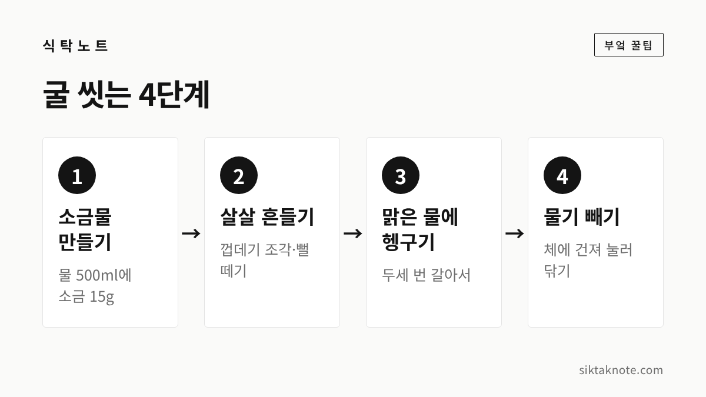
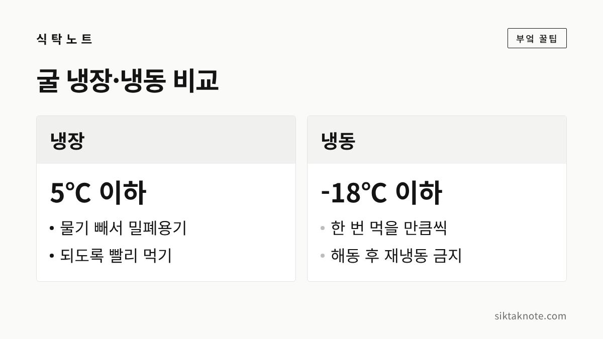

굴 손질·보관법 3가지 — 씻는 법, 냉장, 냉동

3줄 요약
- 깐 굴은 소금물에 살살 흔들어 씻고, 맑은 물에 헹궈 물기를 빼 주세요.
- 냉장은 5℃ 이하에서 되도록 빨리 드시고, 오래 두려면 한 번 먹을 만큼씩 나눠 냉동하는 게 좋습니다.
- 굴은 중심온도 85℃에서 1분 이상 익혀 드시는 것이 식약처와 서울시의 안내입니다.
찬바람이 불기 시작하면 굴이 생각나는데요. 굴국이나 굴전, 김장철 보쌈에 곁들이는 굴까지 겨울 밥상에서 빠지지 않는 재료입니다. 다만 굴은 어떻게 씻고 어떻게 보관하느냐에 따라 맛도 안전도 달라지거든요. 오늘은 소금물로 씻는 법, 냉장 보관, 냉동 보관 이렇게 세 가지를 순서대로 알려 드리겠습니다.
먼저 굴 고르는 법
손질보다 먼저 중요한 건 고르는 일입니다. 해양수산부는 굴을 소개하면서 알이 굵고 검은색 테두리가 선명하며, 속살이 통통하고 탄력 있는 것을 고르는 게 좋다고 안내한 적이 있어요. 껍데기가 붙은 굴이라면 껍데기가 닫혀 있는 것이 좋다는 보도도 있고요.
속살이 칙칙한 회색이나 누런빛을 띠거나, 물을 먹은 듯 퍼져 보이면 피하시는 게 좋겠습니다. 냄새가 이상하다 싶으면 아깝더라도 사지 않는 쪽이 안전합니다.

제철과 포장 표시부터 확인하세요
굴은 겨울철이 제철로 알려져 있고, 해양수산부도 굴을 12월의 이달의 수산물로 소개한 적이 있습니다. 곧 제철이 다가오는데요. 살 때 꼭 보셔야 할 것이 포장에 적힌 표시입니다.
식약처는 '가열조리용'이나 '익혀 먹는'이라고 적힌 굴은 반드시 익혀서 먹으라고 안내하고 있습니다. 날로 드시려면 '생식용'이라고 적혀 있는지 먼저 확인해 주세요.

1. 소금물로 가볍게 씻기
깐 굴에는 껍데기 조각이나 뻘이 붙어 있을 수 있어서 한 번 씻어 주는 게 좋습니다. 수돗물에 오래 헹구는 것보다 소금물에 씻는 방법이 많이 소개되는데요. 한 보도에서는 물 500ml에 소금 15g(약 3%)을 녹인 소금물에 굴을 넣고, 손끝으로 살살 흔들어 껍데기 조각과 뻘을 떼어 내라고 했습니다.
이어서 맑은 물을 두세 번 갈아 가며 부드럽게 헹구고, 체에 건져 키친타월로 감싸듯 눌러 물기를 빼는 순서예요. 문질러 씻으면 살이 터지기 쉬우니 조심하세요.

이 소금물 방법은 공식 기준이 아니라 요리 팁으로 소개된 것입니다. 무즙으로 씻는다는 이야기도 자주 들리는데, 공식 자료에서는 확인하지 못해서 이 글에는 적지 않았습니다. 씻기 전에 손은 비누로 30초 이상 씻고 시작하시는 게 좋겠습니다.

2. 냉장 보관은 5℃ 이하에서 빨리
사 온 굴은 바로 냉장고에 넣어 주세요. 식약처는 냉장식품을 5℃ 이하로 보관하라고 안내하고 있습니다. 씻은 굴은 물기를 충분히 빼서 깨끗한 밀폐용기에 담아 냉장고에서 가장 찬 곳에 두는 방법이 보도되었는데요. 물기가 남으면 굴이 쉽게 무를 수 있다고 합니다.
며칠까지 두어도 되는지는 공식 기준을 찾지 못했습니다. 굴은 신선도가 중요한 식재료라서 사 온 뒤 되도록 빨리 드시는 게 좋겠습니다. 포장에 소비기한이 적혀 있다면 그 날짜를 따르시고, 개봉한 굴은 더 서둘러 드세요. 속살이 끈적이거나 냄새가 이상하면 드시지 말고 버려 주세요.

3. 냉동 보관은 한 번 먹을 만큼씩
바로 먹기 어렵다면 얼려 두는 방법이 있습니다. 식약처 안내로는 냉동식품은 영하 18℃ 이하로 보관하고, 오래 두는 식품은 밀봉해서 냉동실 가장 안쪽에 두라고 합니다.
굴은 소금물에 헹궈 물기를 완전히 뺀 뒤, 한 번 먹을 만큼씩 나누어 밀폐용기에 담아 얼린다는 방법이 소개되었습니다. 나눠 담아 두면 필요한 만큼만 꺼내 쓸 수 있어서 편하죠. 얼려 둘 수 있는 기간은 공식 자료에서 확인하지 못했으니, 날짜를 적어 두고 되도록 빨리 드시길 권합니다.


해동한 굴은 다시 얼리지 마세요
식품공전에는 냉동 수산물을 해동한 뒤 24시간 안에 한해 냉장으로 보존할 수 있고, 해동한 수산물은 다시 얼릴 수 없다고 되어 있습니다. 영업하는 곳에 적용하는 기준이지만 집에서도 참고하면 좋겠습니다.
필요한 만큼만 꺼내서 쓰시고, 녹인 굴은 그날 바로 요리에 쓰세요. 집에서 얼린 굴은 국이나 전, 찜처럼 익혀서 드시는 용도로 쓰는 게 좋겠습니다.
굴은 중심온도 85℃에서 1분 이상
노로바이러스는 기온이 낮을수록 활발하다고 알려져 있는데요. 식약처는 생굴처럼 익히지 않은 어패류를 주요 감염 원인으로 꼽았습니다. 굴과 조개 같은 어패류는 중심온도 85℃에서 1분 이상 가열하라는 것이 식약처와 서울시의 안내입니다.
집에서는 온도계를 쓰기 어려우니, 굴국밥이나 굴찜, 굴전처럼 속까지 충분히 익는 요리로 드시는 게 좋습니다. 식약처도 노약자에게는 생굴 대신 이런 가열 요리를 권했습니다. 증상이 있는 사람은 음식을 준비하거나 조리하지 않는다는 것도 서울시의 예방 수칙에 들어 있습니다.
더 조심하실 분들
서울시는 노로바이러스 감염의 고위험군으로 65세 이상 고령자, 영유아, 면역저하자를 안내하고 있습니다. 대부분 1~3일 안에 좋아지지만 고위험군은 증상이 4~6일 이어지거나 심한 탈수가 올 수 있다고 합니다.
그래서 어르신이나 아이, 면역이 약한 분과 함께 드실 때는 생굴보다 익힌 굴이 안전합니다. 임신 중이거나 지병이 있는 분에 대한 별도 기준은 이번에 확인하지 못했는데요. 걱정되시면 담당 의료진께 먼저 물어보시는 게 좋겠습니다. 먹고 나서 구토나 설사가 심하다면 병원에 가시고, 지사제나 항생제는 의사와 상담 없이 드시지 않는 게 좋습니다.
마지막으로 기억하실 세 가지
굴은 소금물에 살살 씻고, 냉장은 5℃ 이하에서 빨리, 냉동은 한 번 먹을 만큼씩 나눠서 두시면 됩니다. 이 세 가지에 더해 굴은 속까지 익혀 드시는 것을 기본으로 삼아 주세요.
굴이 어떻게 우리 밥상에 오르는지 궁금하시다면 통영 굴 이야기를 함께 읽어 보세요. 해산물 손질 뒤 부엌에 남는 냄새가 신경 쓰이실 때는 생선 비린내 손질 글도 도움이 될 것 같습니다.